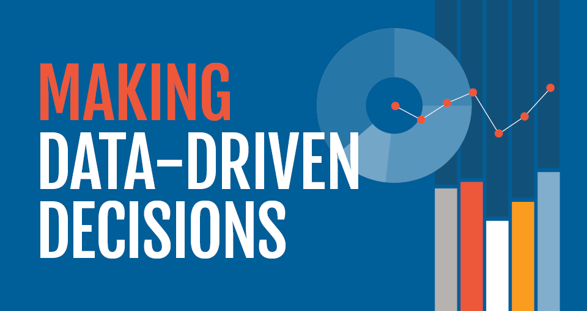
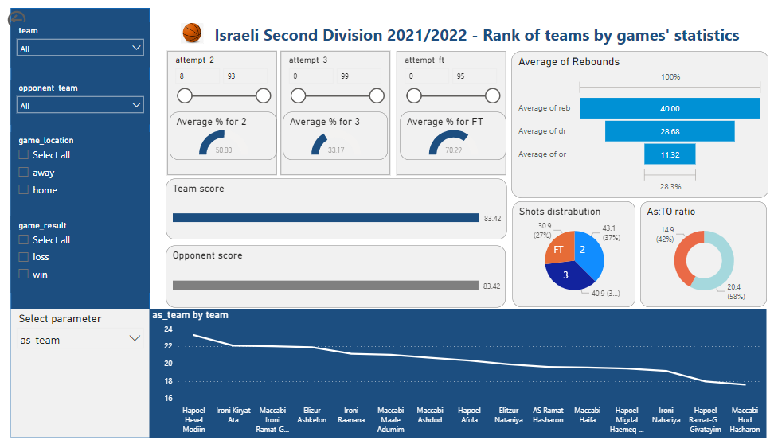
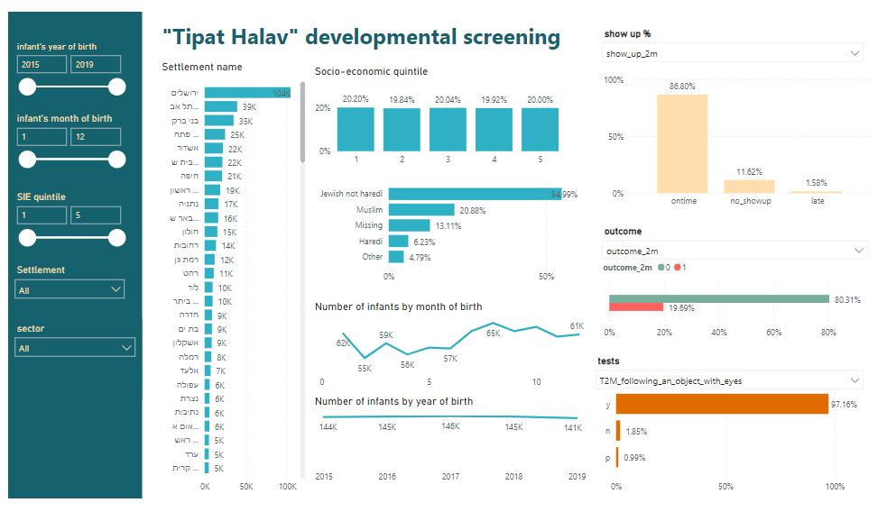

Highly analytical and process-oriented data analyst with practical experience interupting and analyzing data in order to drive effective descions and public affiars; along with expand academic experience creating statistical models, research methodologies and big data analysis. Looking for a data analyst position.


In this project I used Power BI to create a Dashboard which shows voting trends in Israel in the years 2013-2022 for the Haredi institue for public affairs .
In this project I used R to clean and process statistics of players and teams of the Israeli basketball second division (season 2021/2022).
In this project I used Power BI to create a Dashboard for the Leumit Leuage project. The dashboard's screens display teams' and players' statistics, rank and comparision and can be used as a tool for basketball coaches and assistant coaches in planning strategy and preparing the team for games.
In this project I used R to explore the "Tipat Halav"'s dataset of developmental screening tests' results as a preparation for logistic regression analysis, which will be performed as a part of my thesis research in the Enviormental Epidemiology Lab.

In this project I created a dashboard for the "Tipat Halav" dataset.